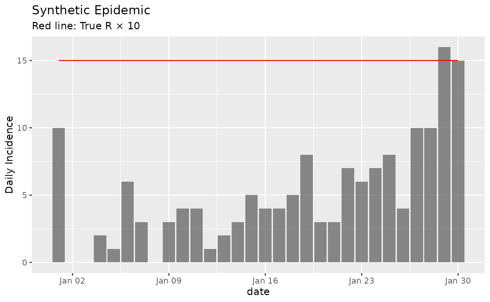

Generate Synthetic Epidemic Data Using the Renewal Equation
Source:R/generate_synthetic_epidemic.R
generate_synthetic_epidemic.RdSimulates epidemic incidence data with known reproduction numbers using the renewal equation framework. This function is useful for testing and validating reproduction number estimation methods, as it generates synthetic outbreaks with ground truth R values that can be compared against estimated values.
Arguments
- true_r
numeric vector; the true time-varying reproduction numbers. The length of this vector determines the number of days in the simulated epidemic
- si_mean
numeric; the mean of the serial interval distribution in days
- si_sd
numeric; the standard deviation of the serial interval distribution in days
- si_dist
character; the distribution family for the serial interval. Must be either "gamma" (default) or "normal". Gamma is recommended as it naturally restricts to positive values
- initial_cases
integer; the number of cases on the first day of the epidemic. Defaults to 10
Value
A data frame with three columns:
date: Date sequence starting from "2023-01-01"true_r: The input reproduction number valuesincidence: Simulated daily case counts
Details
The function implements the discrete renewal equation: $$\lambda_t = \sum_{s=1}^{t-1} I_s \cdot R_s \cdot w(t-s)$$
where \(\lambda_t\) is the expected number of new infections at time \(t\), \(I_s\) is the incidence at time \(s\), \(R_s\) is the reproduction number at time \(s\), and \(w(t-s)\) is the probability mass function of the serial interval distribution for interval \(t-s\).
New cases at each time point are drawn from a Poisson distribution with mean \(\lambda_t\), introducing realistic stochastic variation while maintaining the specified reproduction number trajectory.
The serial interval distribution is truncated at the 99th percentile to avoid computationally expensive calculations for very long tails. For the normal distribution, the probability mass function is normalized to ensure proper probability weights.
This function is particularly useful for:
Validating reproduction number estimation methods
Testing the performance of epidemiological models
Generating realistic epidemic scenarios for research
Creating training data for machine learning approaches
References
Fraser C (2007). Estimating individual and household reproduction numbers in an emerging epidemic. PLoS One, 2(8), e758.
Cori A, Ferguson NM, Fraser C, Cauchemez S (2013). A new framework and software to estimate time-varying reproduction numbers during epidemics. American Journal of Epidemiology, 178(9), 1505-1512.
See also
wallinga_lipsitch for reproduction
number estimation methods that can be applied to the generated data
Examples
# Simple epidemic with constant R = 1.5
constant_r <- rep(1.5, 30)
epidemic1 <- generate_synthetic_epidemic(
true_r = constant_r,
si_mean = 7,
si_sd = 3,
si_dist = "gamma"
)
head(epidemic1)
#> date true_r incidence
#> 1 2023-01-01 1.5 10
#> 2 2023-01-02 1.5 0
#> 3 2023-01-03 1.5 0
#> 4 2023-01-04 1.5 2
#> 5 2023-01-05 1.5 1
#> 6 2023-01-06 1.5 6
# Epidemic with declining R (e.g., intervention effect)
declining_r <- seq(2.0, 0.5, length.out = 50)
epidemic2 <- generate_synthetic_epidemic(
true_r = declining_r,
si_mean = 5,
si_sd = 2,
si_dist = "gamma",
initial_cases = 5
)
# Epidemic with seasonal pattern
days <- 100
seasonal_r <- 1.2 + 0.5 * sin(2 * pi * (1:days) / 365 * 7) # Weekly seasonality
epidemic3 <- generate_synthetic_epidemic(
true_r = seasonal_r,
si_mean = 6,
si_sd = 2.5,
si_dist = "normal"
)
# Plot the results
if (require(ggplot2)) {
library(ggplot2)
ggplot(epidemic1, aes(x = date)) +
geom_col(aes(y = incidence), alpha = 0.7) +
geom_line(aes(y = true_r * 10), color = "red") +
labs(title = "Synthetic Epidemic",
y = "Daily Incidence",
subtitle = "Red line: True R × 10")
}
#> Loading required package: ggplot2
